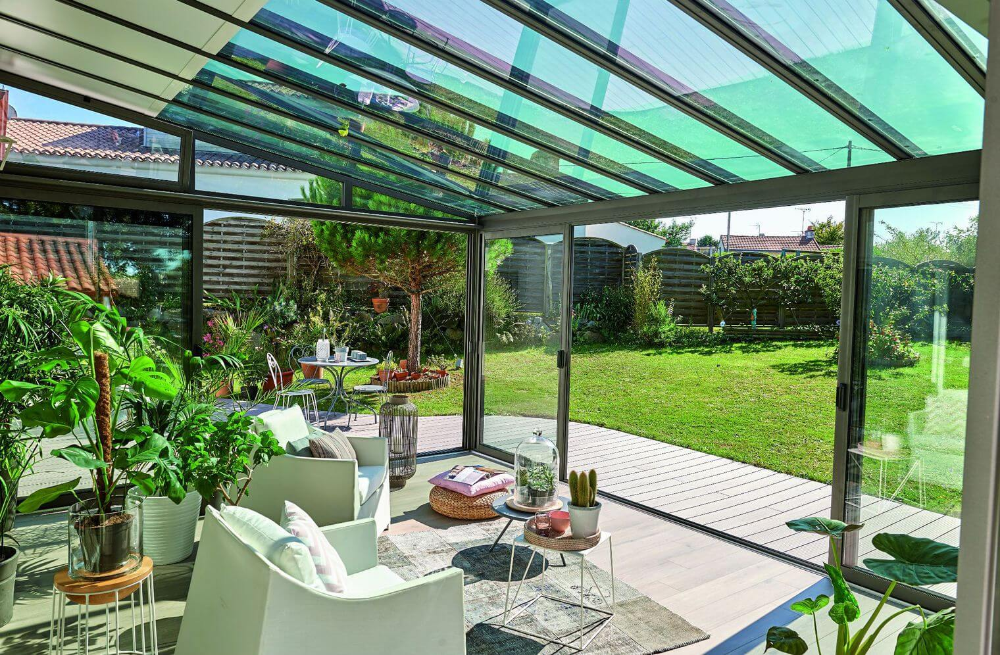

Vous souhaitez rénover votre maison ? Pensez à installer une véranda pour embellir la façade extérieure de votre habitation. A la fois esthétique et fonctionnelle, elle mettra une touche d’originalité sur l’ensemble de l’architecture et agrandit la surface habitable d’une pièce. L’aménagement d’une véranda est aussi essentiel si vous désirez bénéficier d’un cadre de vie idéal au bien-être des résidents. Equipée d’une baie vitrée le plus souvent, la véranda apporte plus de luminosité dans la pièce et offre une vue imprenable sur le jardin. Faites appel à Veranda arcueil, le professionnel de la fabrication et la pose de véranda sur-mesure pour choisir l’installation qui vous convient.

Un service adapté à tous les budgets
Veranda arcueil propose la confection et la pose des vérandas et conçoit un devis selon les besoins de ses clients. Avec de telle expertise, vous pourrez bénéficier d’un cahier de charges conformes à vos attentes et à votre moyen financier. Si vous avez un budget restreint, il est par exemple possible de privilégier des matériaux de moyenne gamme ou de réduire la superficie de la véranda.
Créez une ambiance chaleureuse grâce à l’installation d’une véranda « sur mesure »
La véranda peut varier d’une maison à l’autre. C’est la raison pour laquelle, nous mettons à la disposition de nos clients un large choix de modèles. Veranda arcueil propose des pièces sur mesure pour toutes ses réalisations :
véranda en appui : cette structure se colle sur la partie murale d’une pièce et se caractérise par une toiture légèrement penchée.
véranda rayonnante : ce type de véranda apporte plus de luminosité dans la pièce et se distingue par des cloisons vitrées.
véranda victorienne : idéale pour bénéficier d’une vue sur le jardin, elle s’adapte à tous les types de pièces ( salon, cuisine ou serre)
véranda en pans coupés : ce type de véranda s’adapte parfaitement à la configuration de votre maison.
véranda à toiture plate : ce modèle s’adresse aux propriétaires qui souhaitent étendre la surface habitable de son habitation tout en bénéficiant de plus de luminosité.
Une expérience d'installation de Veranda Champigny-sur-Marne qui n'est plus à prouver
Depuis des années, l'installateur met à votre service son savoir-faire pour réaliser toutes les vérandas en aluminium. C'est ainsi qu'il a travaillé sur des centaines de projets depuis sa création. Les clients se sont toujours montrés satisfaits et enchantés du résultat. Les vérandas apportent une vraie valeur ajoutée à votre maison.
Véranda arcueil, le spécialiste de la véranda dans le 94
VVeranda arcueil s’adresse aux particuliers localisés dans le département de Val-de Marne. Notre société intervient en tout dans 6 communes dont Nogent-sur-Marne, Hay-les-Roses, Créteil, Périgny, Villeneuve-Saint-Georges, Saint-Maur-des-Fossés. Vous pouvez programmer les travaux selon votre disponibilité.
Une équipe professionnelle et expérimentée
Constituée d’artisans qualifiés, Veranda arcueil prend en main la confection et la pose de vérandas dans son intégralité sans avoir recours à des services externalisés.
Des produits garantis et un service rapide
Labélisé QUALIBAT, Veranda arcueil propose des installations conformes aux normes de construction requises. Vous pouvez remplir les formulaires en ligne pour l’obtention d’un devis. Il vous suffit de renseigner la forme et la superficie de la véranda.